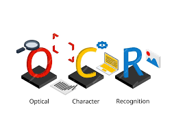

Greetings! I'm Aditya Kingrani, a passionate and results-driven data enthusiast currently
pursuing a master's degree in applied data science at the University of Southern California.
Grounded in my academic journey, where I've honed my skills in data analysis, statistical
modeling, and machine learning, I bring a keen interest in transforming complex data into
actionable insights. Proficient in Python and SQL, and experienced in utilizing data
visualization
tools like Tableau and PowerBI, my portfolio encapsulates a blend of academic accomplishments,
hands-on projects, and internships that underscore my commitment to driving innovation through
data-driven solutions. Explore my portfolio to gain insights into my professional endeavors and
discover how I thrive in dynamic environments, fostering effective communication to both
technical and non-technical stakeholders. Feel free to reach out via email or explore my
LinkedIn and GitHub profiles for
a more in-depth exploration of my experiences. Let's embark on the exciting journey of data
together!

Engineered a PyCharm system for medical prescription OCR, transforming handwritten text into
digital format,
with subsequent conversion to audio files providing valuable accessibility for the visually
impaired.
Developed a data-driven framework, using CNN, enabling farmers in remote areas to predict crops
by uploading
images. This synoptic solution enhances accessibility and contributes to informed agricultural
decisions.

Employed data driven and machine learning methods to forecast results in the English Premier
League for the 2023-2024 season by examining past data, team performance, player statistics and
other pertinent factors to recognise patterns and trends that impact match outcomes.

Crafted dynamic Tableau dashboards for in-depth soccer analysis, turning raw data into visually
compelling insights that enhance strategic decision-making on and off the field.
Explored abundance of COVID 19 data using SQL, unraveling insights and trends from
diverse datasets to contribute valuable perspectives in understanding and combating the
pandemic.

Unravelled the cinematic landscape through Python, conducting a comprehensive movie correlation
analysis to uncover hidden patterns and connections, providing valuable insights for film
enthusiasts and industry professionals alike.